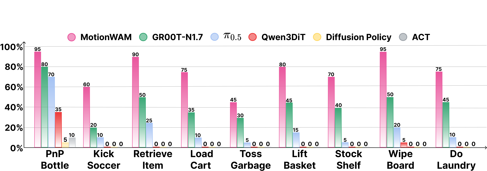

MotionWAM
Towards Foundation World Action Models for Real-Time Humanoid Loco-Manipulation
Whole-Body Loco-Manipulation
Highlights
- Unified whole-body motion latent. A single action space of whole-body motion tokens that jointly covers locomotion, torso motion, height regulation, foot interaction, and hand manipulation, replacing the upper–lower decoupled interface of hierarchical humanoid systems and unlocking task-driven foot behaviors.
- Three-stage egocentric-to-embodiment training. Egocentric video pretraining on 2,136 hours of human and humanoid video, cross-embodiment action post-training, and whole-body teleoperation fine-tuning — progressively adapting a video world model to first-person dynamics and the target humanoid embodiment.
- State-of-the-art real-world performance. On nine Unitree G1 whole-body tasks, MotionWAM lifts the overall success rate from $43.9\%$ (GR00T-N1.7) to $\mathbf{76.1\%}$, an over +32% absolute gain over the strongest VLA baseline trained on the same demonstrations.
- Real-time WAM for humanoid loco-manipulation. An end-to-end World Action Model that conditions the policy on intermediate denoising features of a video world model, running closed-loop at 4.9 Hz on a single A100 — 7× faster than comparable world-model-based policies such as Cosmos Policy.
Method

MotionWAM is a dual-DiT World Action Model trained in three stages. Stage 1: the Video DiT is pre-trained alone on egocentric human and humanoid videos. Stage 2: the Motion DiT is attached and co-trained across heterogeneous Unitree G1 datasets via specific embodiment tags, conditioned on Video DiT hidden states to predict discrete motion-token index and continuous end-effector values. Stage 3: the full model is finetuned on teleoperated whole-body demonstrations retargeted from SMPL-24 to Unitree G1.
Real-World Results

We evaluate MotionWAM on a suite of nine real-world whole-body loco-manipulation tasks on the Unitree G1 humanoid. All baselines are fine-tuned on the same Stage 3 demonstrations and emit actions through the same SONIC interface.
MotionWAM wins on every task and lifts the overall success rate from $43.9\%$ (GR00T-N1.7) to $76.1\%$, an over $32\%$ absolute gain. The gap is largest on tasks demanding whole-body coordination beyond the upper limbs — Kick Soccer ($+40\%$), Load Cart ($+40\%$), Retrieve Item ($+40\%$), Wipe Board ($+45\%$), and Do Laundry ($+30\%$) — where the unified motion latent gives MotionWAM access to task-driven foot and torso behaviors that a decoupled upper–lower interface cannot express.
Task Demonstrations
Kick Soccer (0.5x speed)
Load Cart (1x speed)
Retrieve Item (1x speed)
Wipe Board (1x speed)
Do Laundry (1x speed)
Lift Basket (1x speed)
Toss Garbage (1x speed)
PnP Bottle (1x speed)
Stock Shelf (bottle) (1x speed)
Stock Shelf (vegetable) (1x speed)
Ablation: Three-Stage Training
| Variant | Stage 1 | Stage 2 | Lift Basket | Retrieve Item | Load Cart | Toss Garbage | Kick Soccer | Avg. |
|---|---|---|---|---|---|---|---|---|
| w/o Stage 2 | ✓ | — | 65 | 45 | 30 | 30 | 40 | 42.0 |
| w/o Stage 1 | — | ✓ | 70 | 75 | 60 | 35 | 55 | 59.0 |
| Full | ✓ | ✓ | 80 | 90 | 75 | 45 | 60 | 70.0 |
We disentangle the contribution of each pretraining stage by disabling one stage at a time while keeping Stage 3 fixed. Removing Stage 1 (egocentric video pretraining) costs $11\%$ absolute success; removing Stage 2 (cross-embodiment action post-training) costs $28\%$. The two stages play complementary roles: Stage 1 supplies an egocentric visual-dynamics prior, while Stage 2 grounds that prior into the action space across embodiments.
Real-Time Inference
| Model | Trainable Params | Frequency |
|---|---|---|
| GR00T-N1.7 | 1.6 B | 6.5 Hz |
| Qwen3DiT | 2.3 B | 9.0 Hz |
| Cosmos Policy | 2.0 B | 0.7 Hz |
| MotionWAM (Ours) | 2.5 B | 4.9 Hz |
Because MotionWAM conditions on a single forward pass of the Video DiT rather than a full denoising rollout, it remains real-time on a closed-loop humanoid. On an NVIDIA A100, MotionWAM runs at $4.9$ Hz at the chunk-wise rate — competitive with VLA baselines of similar scale, and seven times faster than Cosmos Policy, the closest world-model-based policy at comparable parameter count.
BibTeX
@misc{zheng2026motionwamfoundationworldaction,
title={MotionWAM: Towards Foundation World Action Models for Real-Time Humanoid Loco-Manipulation},
author={Jia Zheng and Teli Ma and Yudong Fan and Zifan Wang and Shuo Yang and Junwei Liang},
year={2026},
eprint={2606.09215},
archivePrefix={arXiv},
primaryClass={cs.RO},
url={https://arxiv.org/abs/2606.09215},
}